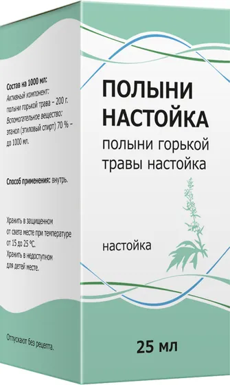

Настойки, экстракты и масла
Полыни настойка
Полыни горькой травы настойка 25мл
- Группа
- Настойки, экстракты и масла
- Форма выпуска
- Полыни горькой травы настойка 25мл
- Производитель
- ООО «Тульская фармацевтическая фабрика», Россия
Информация носит справочный характер. Перед применением прочитайте инструкцию и проконсультируйтесь со специалистом.
Инструкция по применению
01Фармакотерапевтическая группа
Стимулятор аппетита растительного происхождения.
02Состав
Действующее вещество: Полыни горькой трава – 200г;
Вспомогательное вещество: Этанол (этиловый спирт) 70% – до 1000мл.
03Показания к применению
Анорексия, гипо- и анацидный гастрит, хронический холецистит, дискинезия желчевыводящих путей по гипомоторному типу.
04Способы применения
Внутрь по 15-20 капель, разведенных в 1/4 стакана воды, 2-3 раза в день за 20-30 минут до еды. Курс лечения 20-25 дней.